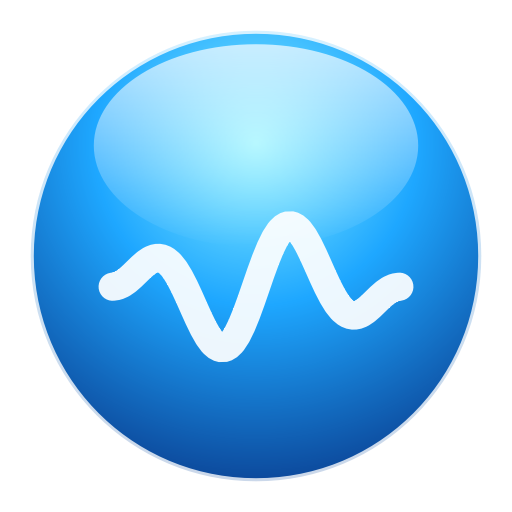
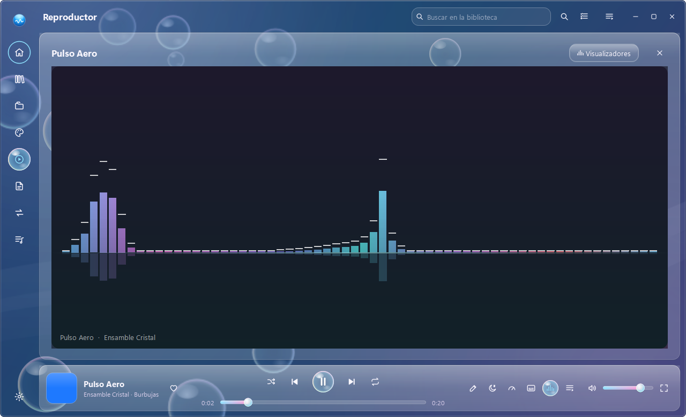
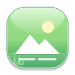
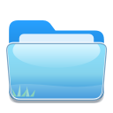
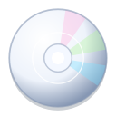
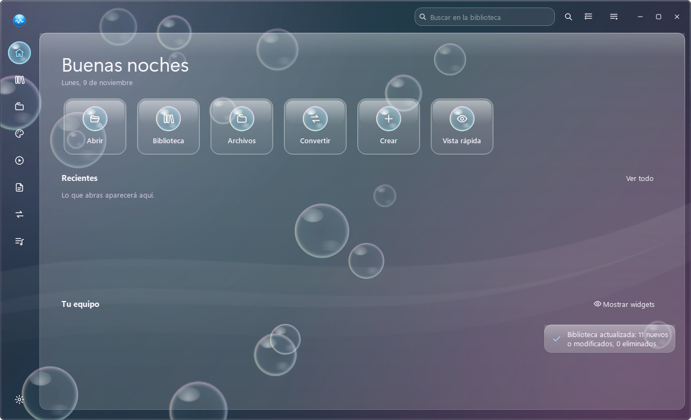

Reproductor
Música y vídeo con cola, subtítulos, pistas de audio, temporizador de apagado, series con siguiente episodio y 11 visualizadores que siguen el sonido real.

AERO PlayerTu música, tus vídeos y tus archivos, con el cristal, el cielo y las burbujas de Windows 7.
Reproductor, visor universal, editores, conversor y mucho más. Gratis, libre y sin telemetría.

Música y vídeo con cola, subtítulos, pistas de audio, temporizador de apagado, series con siguiente episodio y 11 visualizadores que siguen el sonido real.

Fotos (también HEIC y AVIF), PDF, documentos, hojas, presentaciones, comprimidos e imágenes de disco. Vista rápida con Espacio desde el Explorador.
Editor de vídeo con línea de tiempo y efectos, editor de imágenes con capas, AERO Paint, documentos, hojas, presentaciones y PDF a editable con OCR.

Explorador con la familia de iconos AERO, búsqueda global ultrarrápida y nada se ejecuta sin que lo confirmes.
ZIP, 7Z, RAR, TAR e ISO con contraseñas AES-256, protección contra rutas peligrosas y cancelación sin restos.

Explora y extrae ISO, IMG, BIN/CUE, NRG y MDF sin montarlas, o móntalas con Windows cuando quieras.
Ve el contenido, elige archivos y descarga. Nada empieza solo, nada se ejecuta y no abre puertos. Se puede desactivar.
Imágenes, audio, vídeo y documentos con perfiles, pausa, reintento y sin tocar nunca los originales.
«Abrir con», iconos AERO en el Explorador, menú del clic derecho y actualizaciones con un clic, siempre con tu permiso.
En el idioma de esta página · haz clic para ampliar

Las partes que más trabajan con miles de archivos están escritas en Rust y usan todos los núcleos del procesador sin congelar la ventana.
Para Windows 10 y Windows 11 de 64 bits.
La versión portable no incluye el 100 % de las funciones del programa: es ideal para un USB o un ordenador donde no puedes instalar nada, pero la integración con Windows y las actualizaciones automáticas son del instalador.
| Lo que puedes hacer | Instalador | Portable |
|---|---|---|
| Reproducir, ver, editar, convertir y comprimir | ✔ | ✔ |
| Accesos directos en Inicio y en el escritorio | ✔ | ✘ |
| «Abrir con» y aplicación predeterminada | ✔ | Desde Ajustes (se pierde si mueves la carpeta) |
| Iconos AERO en el Explorador | ✔ | Desde Ajustes |
| Menú del clic derecho del Explorador | ✔ | Desde Ajustes |
| Actualizaciones | Con un clic | Aviso y descarga manual |
| Desinstalar desde Configuración de Windows | ✔ | Borrar la carpeta |
| Funciona sin instalar (USB, PC del trabajo) | ✘ | ✔ |
| Tus ajustes y biblioteca | Se guardan en tu usuario | Se guardan en tu usuario |
La primera vez, Windows SmartScreen puede avisar porque la aplicación aún no tiene firma digital: pulsa «Más información» › «Ejecutar de todas formas». Puedes comprobar el archivo con las sumas SHA-256 de la página de la versión.
Todas las versiones y notas de cambios · Para convertir vídeo y audio hace falta FFmpeg (la reproducción funciona sin él).
Sí, totalmente. Es software libre con licencia GPL-3.0: sin anuncios, sin suscripciones y sin recoger datos.
No por su cuenta. AERO Player se añade a «Abrir con» y tú eliges en la Configuración de Windows si quieres usarlo por defecto.
Porque el ejecutable aún no está firmado con un certificado de pago. El código es público y cada versión publica sus sumas SHA-256 para que puedas comprobarlo.
La versión instalada consulta GitHub una vez al día como mucho y te ofrece la versión nueva; con un clic la descarga, la comprueba y la instala conservando tus ajustes. Se puede desactivar.
¡Claro! Abre una incidencia en GitHub o propón cambios con una solicitud de incorporación (pull request).